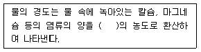
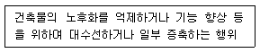
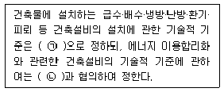
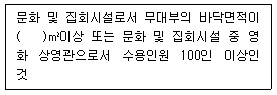
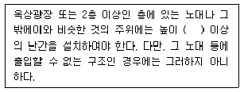

건축설비산업기사 (2017-09-23 기출문제)
1과목: 건축일반
1. 도서관 계획에 관한 설명으로 옳은 것은?
- 도서관은 건축적으로 확장, 또는 변화에 순응할 수 있도록 유연성 있는 평면을 계획해야 한다.
- 서고와 열람실의 충고는 동일하게 하여야 한다.
- 계획초기부터 서고와 열람실의 위치를 분리 계획하여야 한다.
- 서고는 인공조명보다 자연채광이 좋다.
(정답률: 71%)

2. 곡면판이 지니는 역학적 특성을 응용한 구조로서 외력은 주로 판의 면내력으로 전달되기 때문에 경량이고 내력이 큰 구조물을 구성할 수 있는 구조는?
- 보강 블록조
- 철골 구조
- 쉘 구조
- 벽식 구조
(정답률: 85%)
3. 실내의 환기량 산정에서 1인당의 환기량을 나타내는방법으로 옳은 것은?
- g/m3∙인
- m2/h∙인
- kg/m3∙인
- m3/h ∙인
(정답률: 87%)
4. 전학급을 2개 집단으로 하고 한쪽이 일반교실을 사용할 때 다른쪽은 특별교실을 사용하는 학교운영 방식은?
- 달톤형
- 플래툰형
- 종합교실형
- 교과교실형
(정답률: 84%)
5. 아파트의 평면형식 중 홀형에 관한 설명으로 옳지 않은 것은?
- 프라이버시가 양호하다.
- 고층 아파트의 경우 엘리베이터 설치 등에 따른 시설비가 많이 소요된다.
- 세대 출입이 편리하다.
- 채광의 통풍 조건이 매우 불리하다.
(정답률: 73%)
6. 400~500호 정도의 규모이며 일상 소비생활에 필요한 공동시설이 운영 가능한 단위로서 소비시설을 갖추며, 후생시설, 보육시설 등으로 구성되는 주거단지는?
- 인보구
- 근린분구
- 인보분구
- 쿨데삭
(정답률: 82%)
7. 두 부재를 끝맞춤할 때 마구리가 보이지 않도록 모서리부분을 45°로 하는 목재의 맞춤 방식은?
- 반턱맞춤
- 주먹장맞춤
- 연귀맞춤
- 사개맞춤
(정답률: 72%)
8. 다음 중 전기 조명장치를 간접조명으로 하기에 가장 적합한 반자는?
- 층단 구성반자
- 종이반자
- 우물반자
- 널반자
(정답률: 74%)
9. 소음조절을 위한 건축계획에 관한 설명으로 옳지 않은 것은?
- 부지경계선에 장벽을 설치한다.
- 아파트는 경계벽을 중심으로 다른 종류의 방을 배치한다.
- 소음원쪽에 건물의 배면이 향하도록 배치한다.
- 침실, 서재 등은 소음원의 반대쪽에 배치한다.
(정답률: 80%)
10. 벽돌벽 등에 장식적으로 구멍을 내어 쌓는 벽돌 쌓기법은?
- 영롱쌓기
- 엇모쌓기
- 영식쌓기
- 세워쌓기
(정답률: 86%)
11. 시티호텔로서 장기간 체재자를 위한 것으로 일반적으로 각 단위실에 주방이 부속되어 있는 호텔은?
- 커머셜 호텔(commercial hotel)
- 산장 호텔(mountain hotel)
- 아파트먼트 호텔(apartment hotel)
- 클럽 하우스(club house)
(정답률: 89%)
12. 사무실 코어설계에서 방재설비와 관련 있는 것은?
- 파이프샤프트
- 스모크타워
- 더스트슈트
- 메일슈트
(정답률: 78%)
13. 인체의 열쾌적에 영향을 미치는 요소를 물리적 변수와 개인적 변수로 분류할 때 물리적 변수에 속하지 않는 것은?
- 기온
- 습도
- 활동량
- 기류
(정답률: 84%)
14. 병원의 기능에 따라 건물의 배치가 집중식으로 되는 요인에 해당되지 않는 것은?
- 부지의 협소화
- 종합진찰의 기능 구성
- 장애자 특수 시설의 수용
- 건축의 설비와 구조의 발달
(정답률: 83%)
15. 작업환경에서 눈의 피로를 야기할 수 있는 환경요인으로 거리가 먼 것은?
- 부적합한 조도
- 형광등의 깜박거림 현상
- 불쾌감을 주는 현휘 발생
- 작업과 배경사이의 휘도대비가 매우 작을 때
(정답률: 88%)
16. 상점에서 측면판매에 관한 설명으로 옳지 않은 것은?
- 상품이 손에 잡혀서 충동구매가 이루어 질 수 있다.
- 판매원의 정위치를 정하기 어렵고 불안정하다.
- 진열면적이 커지고 상품에 친근감이 있다.
- 포장이 편리하며 시계, 귀금속, 카메라 상점에서 일반적으로 사용된다.
(정답률: 89%)
17. 상점에서 진열장의 반사방지를 위한 방법이 아닌 것은?
- 진열장 내의 밝기를 인공적으로 낮게 한다.
- 차양을 설치한다.
- 유리면을 경사지게 한다.
- 특수한 경우에는 곡면유리를 사용한다.
(정답률: 85%)
18. 주택단지내의 건물 배치계획에서 남북간 인동간격의 결정요소와 가장 관계가 먼 것은?
- 대지 경사도
- 태양의 고도
- 건물의 높이
- 창의 크기
(정답률: 81%)
19. 새로운 주거계획의 기본방향과 거리가 먼 것은?
- 전통주거의 계승
- 가족본위의 주거
- 가사노동의 경감
- 생활의 쾌적함 증대
(정답률: 88%)
20. 보의 종류에 관한 설명으로 옳지 않은 것은?
- 양단이 벽돌, 블록 등에 얹혀있는 상태로 된 보를 단순보라고 한다.
- 2개 이상의 경간 사이에 걸쳐 일체로 연결된 보를 내민보라고 한다.
- 플레이트 보는 철골조 조립보의 일종이다.
- 프리캐스트 콘크리트 보는 공장에서 생산하여 현장에 서 조립하는 보이다.
(정답률: 71%)
2과목: 위생설비
21. 고가수조에 관한 설명으로 옳지 않은 것은?
- 재질로서 강판, 스테인리스, FRP 등이 사용된다.
- 정기적인 청소를 위해 중간에 칸막이를 설치할 필요가 있다.
- 양수관, 급수관, 오버플로우관, 배수관, 통기관 등을 구비한다.
- 고가수조의 용량은 고가수조로 송수하는 양수 펌프의 양수량과 관계가 없다.
(정답률: 76%)
22. 고층건물에서 배수수직관 내의 압력변화를 방지 또는 완화하기 위하여, 배수수직관으로부터 분기 ∙입상하여 통기수직관에 접속하는 통기관은?
- 신정통기관
- 공용통기관
- 결합통기관
- 각개통기관
(정답률: 70%)
23. 2개 이상의 엘보를 사용하여 나사부분의 회전에 의해 신축을 흡수하는 신축이음은?
- 루프형
- 스위블형
- 슬리브형
- 벨로즈형
(정답률: 84%)
24. 스프링클러설비의 배관에 관한 설명으로 옳은 것은?
- 가지배관이란 스프링클러헤드가 설치되어 있는 배관을 말한다.
- 교차배관이란 직접 또는 수직배관을 통하여 주배관에 급수하는 배관을 말한다.
- 주배관이란 수원 및 옥외송수구로부터 스프링클러헤드에 급수하는 전체 배관을 말한다.
- 급수배관이란 가지배관과 스프링클러헤드를 연결하는 구부림이 용이하고 유연성을 가진 배관을 말한다.
(정답률: 79%)
25. 급탕배관에 관한 설명으로 옳은 것은?
- 도피관의 배수는 간접배수로 한다.
- 중앙식 급탕설비는 원칙적으로 중력식 순환 방식으로 한다.
- 하향배관의 경우 급탕관은 상향구배, 반탕관은 하향구배로 한다.
- 팽창관 및 도피관에는 물의 역류를 방지하기 위해 체크밸브를 설치한다.
(정답률: 46%)
26. 회전차 주위에 디퓨저인 안내 날개를 가지고 있는 터보형 펌프는?
- 터빈 펌프
- 베인 펌프
- 마찰 펌프
- 볼류트 펌프
(정답률: 79%)
27. 간접가열식 급탕방식에 관한 설명으로 옳지 않은 것은?
- 보일러 내면에 스케일이 낄 염려가 없다.
- 가열 보일러는 난방용 보일러와 겸용할 수 있다.
- 저탕조는 가열코일을 내장하는 등 구조가 약간 복잡하다.
- 소규모 급탕설비에 적당하며 대규모 급탕설비에는 사용할 수 없다.
(정답률: 73%)
28. 트랩의 봉수파괴 요인 중 배수수직관 가까운 곳에 기구를 설치하는 경우, 상층부 기구의 다량배수가 급속히 흘러 배수수평지관의 공기 흐름이 유인되어 봉수가 파괴되는 것은?
- 증발 현상
- 모세관 현상
- 자기사이폰 작용
- 유도사이폰 작용
(정답률: 68%)
29. 액화석유가스에 관한 설명으로 옳지 않은 것은?
- 액화하면 체적이 약 1/250로 된다.
- 연소 시 소요 공기량이 가장 적다.
- 발열량이 높아 단시간에 온도를 높일 수 있다.
- 공기보다 무거우므로 누설되면 대기 중으로 확산되지 않고 지면에 체류한다.
(정답률: 70%)
30. 양수량이 300L/min, 펌프의 양정이 50m, 펌프의 효율이 45%일 때, 펌프의 축동력은?
- 4.35kW
- 5.45kW
- 7.16kW
- 9.31kW
(정답률: 64%)
31. 고가수조방식의 급수방식에서 양수펌프의 전양정 계산 시 일반적으로 무시하는 것은?
- 압력 수두차
- 위치 수두차
- 흡입 마찰 손실 수두
- 토출 마찰 손실 수두
(정답률: 46%)
32. 다음의 물의 경도에 관한 설명 중 ( )안에 알맞은 용도는?

- 불소
- 탄산칼슘
- 탄산나트륨
- 탄산마그네슘
(정답률: 83%)
33. 다음 중 건물의 급수량 산정과 가장 관계가 먼 것은?
- 건물의 충고
- 급수 대상 인원
- 건물의 유효면적
- 설치된 위생기구수
(정답률: 59%)
34. 다음의 배관부속 중 관의 말단을 막을 때 사용하는 것은?
- 부싱
- 니플
- 엘보
- 플러그
(정답률: 82%)
35. 급수설비에 관한 설명으로 옳은 것은?
- 펌프의 흡상 높이는 수온이 상승에 따라 높아진다.
- 급수배관을 콘크리트에 매설할 경우 주로 연관이 사용된다.
- 급수관내 물의 흐름을 급격히 정지하면 수격 작용이 발생하기 쉽다.
- 압력수조식 급수방법은 고가수조식 급수방법보다 유지 관리가 비교적 용이하고 고장이 적다.
(정답률: 83%)
36. 수도직결식 급수방식에서 수도본관으로부터 수직 높이 6m에 샤워기를 설치하는 경우 수도 본관의 최소 필요압력은? (단, 샤워기의 최소 필요압력은 70kPa, 수도 본관에서 샤워기까지의 전마찰손실압력은 50kPa이다.)
- 약 100kPa
- 약 180kPa
- 약 570kPa
- 약 680kPa
(정답률: 76%)
37. 화장실에서 배출되는 오수를 정화시설을 통해 정화하는 가장 주된 이유는?
- 화학적 산소요구량을 줄이기 위해
- 화학적 산소요구량을 늘리기 위해
- 생물화학적 산소요구량을 줄이기 위해
- 생물화학적 산소요구량을 늘리기 위해
(정답률: 85%)
38. 트랩의 유효봉수깊이는 일반적으로 50~100mm이다. 봉수깊이가 100mm 이상으로 너무 깊을 경우에 관한 설명으로 옳은 것은?
- 봉수가 쉽게 파괴된다.
- 사이폰 현상이 커지게 된다.
- 급탕의 온도저하를 막을 수 없게 된다.
- 통수능력이 감소되며 그에 따라 자정작용이 없어지게 된다.
(정답률: 77%)
39. 기구배수부하단위(FUD)가 1인 기구명과 배수량으로 옳은 것은?
- 세면기, 14L/min
- 세면기, 28.5L/min
- 대변기, 14L/min
- 대변기, 28.5L/min
(정답률: 68%)
40. 연결송수관설비에 관한 설명으로 옳지 않은 것은?
- 주배관의 구경은 100mm 이상의 것으로 할 것
- 방수구의 호스접결구는 바닥으로부터 높이 0.5m 이상 1m 이하의 위치에 설치할 것
- 방수구는 연결송수관설비의 전용방수구 또는 옥내소화전방수구로서 구경 65mm의 것으로 할 것
- 배관은 지면으로부터의 높이가 25m 이상인 특정소방대상물 또는 지상 7층 이상인 특정 소방대상물에 있어서는 습식설비로 할 것
(정답률: 75%)
3과목: 공기조화설비
41. 밸브와 사용 용도의 연결이 옳지 않은 것은?
- 체크 밸브 - 역류 방지용
- 글로브 밸브 - 유량 조절용
- 게이트 밸브 - 관로의 개폐용
- 볼 밸브 - 관경이 큰 관로의 유량 조절용
(정답률: 84%)
42. 온수난방에서 상당방열면적을 구할 때 기준이 되는 표준방열량은?
- 450W/m2
- 523W/m2
- 650W/m2
- 756W/m2
(정답률: 66%)
43. 다음 중 공기조화 설비계획 시 외부 존의 조닝 방법으로 가장 적합한 것은?
- 소음별 조닝
- 방위별 조닝
- 공기의 청정도별 조닝
- 관리에 따른 시간별 조닝
(정답률: 68%)
44. 습공기선도에 관한 설명으로 옳은 것은?
- 습공기의 상태변화에 따른 열량변화를 파악할 수 있다.
- 습공기의 상태변화에 따른 유속변화를 파악할 수 있다.
- 습공기의 상태변화에 따른 소요환기횟수를 파악할 수있다.
- 습공기의 상태변화에 따른 공기조화기의 크기를 파악할 수 있다.
(정답률: 69%)
45. 다음 중 온수난방 배관에서 역환수(reverse return) 방식을 사용하는 이유로 가장 알맞은 것은?
- 배관의 신축을 흡수하기 위하여
- 배관의 부식을 방지하기 위하여
- 온수의 유량공급을 동일하게 하기 위하여
- 배관 내의 공기배출을 용이하게 하기 위하여
(정답률: 90%)
46. 덕트의 아스펙트비(aspect ratio)에 관한 설명으로 옳은 것은?
- 아스펙트비가 크면 층고를 작게 차지한다.
- 아스펙트비는 8:1을 기준으로 근접할수록 바람직하다.
- 덕트의 단면이 정사각형일 경우 아스펙트비는 4:1 이다.
- 동일한 상당직경인 경우 아스펙트비가 클수록 덕트재료비가 적게 든다.
(정답률: 57%)
47. 냉방부하의 종류 중 현열과 잠열을 동시에 보유하고 있는 부하에 속하지 않는 것은?
- 인체부하
- 외기부하
- 조명기구부하
- 틈새바람부하
(정답률: 78%)
48. 풍량이 1,000m3/h인 공기를 건구온도 32℃, 습구온도 27℃, 엔탈피 84.82kJ/kg의 상태에서 건구온도 17℃, 상대습도 95%인 상태까지 냉각할 경우, 필요한 냉각열량은? (단, 건조공기 밀도는 1.2kg/m3이며, 건구온도 17℃의 엔탈피는 46.25kJ/kg이다.)
- 10.09kW
- 11.25kW
- 12.86kW
- 13.57kW
(정답률: 53%)
49. 증기트랩 중 기계식 트랩으로만 나열된 것은?
- 버킷 트랩, 플로트 트랩
- 버킷 트랩, 벨로즈 트랩
- 플로트 트랩, 열동식 트랩
- 바이메탈 트랩, 열동식 트랩
(정답률: 70%)
50. 다음 중 일반적으로 독립된 환기계통으로 하는 곳은?
- 식당
- 사무실
- 강의실
- 설계실
(정답률: 90%)
51. 옥내의 공조배관에서 보온 및 보냉을 하지 않는 관은?
- 증기관
- 냉수관
- 온수관
- 냉각수관
(정답률: 80%)
52. 다음 중 실내를 정압(+)으로 유지하여야 하는 곳은?
- 식당
- 수술실
- 사무실
- 공연장
(정답률: 88%)
53. 건구온도 20℃, 절대습도 0.015kg/kg′인 습공기의 엔탈피는? (단, 건공기의 정압비열 1.01kJ/kg∙K, 수증기의 정압비열 1.85kJ/kg∙K, 0℃에서 포화수의 증발잠열 2501kJ/kg)
- 23.15kJ/kg
- 35.24kJ/kg
- 58.27kJ/kg
- 67.36kJ/kg
(정답률: 41%)
54. 설계 외기조건을 선정하기 위한 위험률(TAC)에 관한 설명으로 옳지 않은 것은?
- 위험률을 크게 잡으면 장치용량도 커진다.
- 요구조건이 엄격한 건물일수록 위험률은 작게 한다.
- 위험률 5%는 위험률 2.5% 보다 설계 외기기준 온도를 벗어나는 시간이 2배이다.
- 위험률은 난방 또는 냉방기간의 총 시간에 대한 온도출현 빈도분포로부터 구한다.
(정답률: 64%)
55. 다음 중 공기를 가습하는 방법으로 부적당한 것은?
- 에어워셔의 이용
- 증기의 직접분무
- 히트파이프의 이용
- 물 또는 온수의 직접 분무
(정답률: 74%)
56. 다음 중 축류형 취출구에 속하지 않는 것은?
- 팬형
- 노즐형
- 그릴형
- 펑커루버
(정답률: 51%)
57. 전열교환기에 관한 설명으로 옳지 않은 것은?
- 현열과 잠열을 동시에 교환한다.
- 공기조화용 송풍량이 비교적 많은 곳에서 유리하다.
- 열회수율이 좋고, 고온측 및 저온측 유체의 누설이 없는 것을 사용한다.
- 배열회수에 이용되는 배기는 원칙적으로 주방 및 보일러의 배기가스를 이용한다.
(정답률: 75%)
58. 공기의 상태변화 중 열의 출입이 없는 단열 변화에 속하는 것은?
- 가열가습
- 냉각감습
- 증발냉각
- 가습포화
(정답률: 54%)
59. 유리창을 통한 일사취득량을 줄이기 위한 방법으로 옳지 않은 것은?
- 입사각을 작게 한다.
- 투과율을 작게 한다.
- 반사유리를 사용한다.
- 차폐계수를 작게 한다.
(정답률: 59%)
60. 송풍기에 관한 법칙으로 옳지 않은 것은?
- 풍량은 회전속도비에 비례하여 변화한다.
- 동력은 회전속도비의 3제곱에 비례하여 변화한다.
- 압력은 송풍기 크기비의 2제곱에 비례하여 변화한다.
- 동력은 송풍기 크기비의 4제곱에 비례하여 변화한다.
(정답률: 73%)
4과목: 건축설비관계법규
61. 층수가 10층이고, 각 층의 거실면적이 1,000m2 업무시설에 설치하여야 하는 승용 승강기의 최소 대수는? (단, 8인승 승강기의 경우)
- 1대
- 2대
- 3대
- 4대
(정답률: 55%)
62. 건축물의 에너지절약 설계기준에 따른 단열재의 두께는 지역별로 다르게 적용된다. 다음 중 중부 지역에 속하지 않는 것은?
- 경기도
- 대전광역시
- 경상북도 청송군
- 충청남도 천안시
(정답률: 86%)
63. 건축법령상 다음과 같이 정의되는 용어는?

- 재축
- 리빌딩
- 리모델링
- 리노베이션
(정답률: 80%)
64. 다음은 건축설비 설치의 원칙에 관한 기준 내용이다. ( )안에 알맞은 것은?

- ㉠ 국토교통부령, ㉡ 기획재정부장관
- ㉠ 국토교통부령, ㉡ 산업통상자원부장관
- ㉠ 산업통상자원부령, ㉡ 국토교통부장관
- ㉠ 산업통상자원부령, ㉡ 기획재정부장관
(정답률: 86%)
65. 다음의 소방시설 중 피난설비에 속하지 않는 것은?
- 완강기
- 유도등
- 인공소생기
- 비상콘센트설비
(정답률: 77%)
66. 건축물에 설치하는 헬리포트에 관한 기준 내용으로 옳지 않은 것은?
- 헬리포트의 주위한계선은 백색으로 할 것
- 헬리포트의 주위한계선의 너비는 38cm로 할 것
- 헬리포트의 길이와 너비는 각각 20m 이상으로 할 것
- 헬리포트의 중심으로부터 반경 12m 이내에는 헬리콥터의 이∙착륙에 장애가 되는 건축물, 공작물, 조경시설 또는 난간 등을 설치하지 아니할 것
(정답률: 70%)
67. 다음의 제연설비를 설치하여야 하는 특정소방대상물과 관련된 기준 내용 중 ( )안에 알맞은 것은?

- 100
- 150
- 200
- 300
(정답률: 68%)
68. 공동주택과 오피스텔의 난방설비를 개별난방 방식으로 하는 경우에 대한 기준 내용으로 옳지 않은 것은?
- 보일러의 연도는 내화구조로서 공동연도로 설치할 것
- 보일러실의 윗부분에는 면적이 0.5m2 이상인 환기창을 설치할 것
- 공동주택의 경우에는 난방구획마다 내화구조로 된 벽∙바닥과 갑종방화문으로 된 출입문으로 구획할 것
- 보일러는 거실 외의 곳에 설치하되, 보일러를 설치하는 곳과 거실사이의 경계벽은 출입구를 제외하고는 내화구조의 벽으로 구획할 것
(정답률: 56%)
69. 건축물의 용도변경과 관련된 시설군 중 영업 시설군에 속하지 않는 것은?
- 판매시설
- 운동시설
- 업무시설
- 숙박시설
(정답률: 76%)
70. 건축물의 설비기준 등에 관한 규칙에 따라 피뢰설비를 설치하여야 하는 대상 건축물의 높이 기준은?
- 10m 이상
- 20m 이상
- 30m 이상
- 50m 이상
(정답률: 85%)
71. 건축법령상 용도에 따른 건축물의 종류가 옳지 않은 것은?
- 공동주택 - 다세대주택
- 숙박시설 - 유스호스텔
- 제1종 근린생활시설 - 한의원
- 제2종 근린생활시설 - 일반음식점
(정답률: 69%)
72. 연면적이 200m2을 초과하는 초등학교에 설치하는 복도의 유효너비는 최소 얼마 이상으로 하여야 하는가? (단, 양옆에 거실이 있는 복도)
- 1.2m
- 1.5m
- 1.8m
- 2.4m
(정답률: 67%)
73. 특정소방대상물이 숙박시설인 경우, 자동화재 탐지설비를 설치하여야 하는 연면적 기준은?
- 600m2 이상
- 1,000m2 이상
- 1,500m2 이상
- 2,000m2 이상
(정답률: 40%)
74. 국토교통부령으로 정하는 기준에 따라 채광 및 환기를 위한 창문등이나 설비를 설치하여야 하는 대상에 속하지 않는 것은?
- 공동주택의 거실
- 의료시설의 병실
- 종교시설의 집회실
- 교육연구시설 중 학교의 교실
(정답률: 64%)
75. 건축물의 에너지절약설계기준상 야간단열장치의 총열 관류저항은 최소 얼마 이상이 되어야 하는가?
- 0.1m2∙/W
- 0.4m2∙/W
- 0.5m2∙/W
- 0.8m2∙/W
(정답률: 86%)
76. 다음 중 방화구조에 속하지 않는 것은?
- 심벽에 흙으로 맞벽치기한 것
- 철망모르타르로서 그 바름두께가 2cm인 것
- 시멘트모르타르위에 타일을 붙인 것으로서 그 두께의 합계가 3cm인 것
- 석고판위에 시멘트모르타르를 바른 것으로서 그 두께의 합계가 2cm인 것
(정답률: 73%)
77. 특정소방대상물이 아파트인 경우, 특급 소방안전관리대상물이기 위한 기준 내용으로 옳은 것은?
- 30층 이상(지하층을 포함한다)이거나 지상으로부터 높이가 120m 이상인 아파트
- 30층 이상(지하층을 제외한다)이거나 지상으로부터 높이가 120m 이상인 아파트
- 50층 이상(지하층은 포함한다)이거나 지상으로부터 높이가 200m 이상인 아파트
- 50층 이상(지하층은 제외한다)이거나 지상으로부터 높이가 200m 이상인 아파트
(정답률: 44%)
78. 특별시나 광역시에 건축하는 경우, 특별시장이나 광역시장의 허가를 받아야 하는 대상 건축물의 연면적 기준은?
- 연면적의 합계가 1만 제곱미터 이상인 건축물
- 연면적의 합계가 5만 제곱미터 이상인 건축물
- 연면적의 합계가 10만 제곱미터 이상인 건축물
- 연면적의 합계가 20만 제곱미터 이상인 건축물
(정답률: 81%)
79. 다음은 옥상광장 등의 설치에 관한 기준 내용이다. ( )안에 알맞은 것은?

- 0.9m
- 1.2m
- 1.5m
- 1.8m
(정답률: 76%)
80. 문화 및 집회시설 중 공연장의 개별관람석의 바닥면적이 1,200m2인 경우, 이 개별관람석의 출구는 최소 몇 개소 이상 설치하여야 하는가? (단, 각 출구의 유효너비가 1.8m인 경우)
- 2개소
- 3개소
- 4개소
- 5개소
(정답률: 65%)